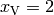
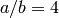
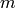
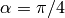
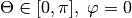
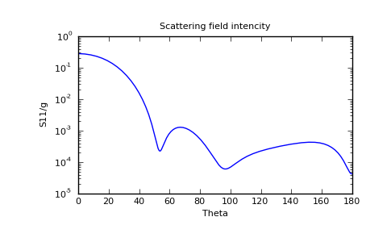
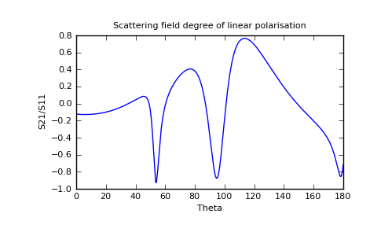

<div class="sphinxdoc">

  <div class="section" id="getting-started">
<span id="id1"></span><h1>Getting started<a class="headerlink" href="#getting-started" title="Permalink to this headline">¶</a></h1>
<div class="section" id="installation">
<span id="getting-started-installation"></span><h2>Installation<a class="headerlink" href="#installation" title="Permalink to this headline">¶</a></h2>
<p>To install ScattPy one needs:</p>
<ul class="simple">
<li>Python 2.5 - 2.7</li>
<li>F2PY with a configured FORTRAN77 compiler</li>
<li>Python packages:<ul>
<li>NumPy</li>
<li>SciPy</li>
<li>NumdiffTools</li>
</ul>
</li>
</ul>
<div class="section" id="ubuntu">
<h3>Ubuntu<a class="headerlink" href="#ubuntu" title="Permalink to this headline">¶</a></h3>
<div class="highlight-bash"><div class="highlight"><pre><span class="nv">$ </span>sudo apt-get install python-numpy python-scipy python-dev python-setuptools ipython
<span class="nv">$ </span>sudo easy_install numdifftools
<span class="nv">$ </span>sudo easy_install scikits.scattpy
</pre></div>
</div>
</div>
<div class="section" id="windows">
<h3>Windows<a class="headerlink" href="#windows" title="Permalink to this headline">¶</a></h3>
<p>Instructions for installing ScattPy under Windows operating system will be added later</p>
</div>
</div>
<div class="section" id="sample-session">
<span id="getting-started-sample-session"></span><h2>Sample Session<a class="headerlink" href="#sample-session" title="Permalink to this headline">¶</a></h2>
<p>The most simple way of trying ScattPy is to run an interactive python session with IPython.</p>
<div class="highlight-bash"><div class="highlight"><pre><span class="nv">$ </span>ipython
</pre></div>
</div>
<p>Import required packages.</p>
<div class="highlight-ipython"><div class="highlight"><pre><span class="gp">In [2]: </span><span class="kn">from</span> <span class="nn">numpy</span> <span class="kn">import</span> <span class="o">*</span> <span class="p">;</span>
<span class="gp">In [3]: </span><span class="kn">from</span> <span class="nn">scikits.scattpy</span> <span class="kn">import</span> <span class="o">*</span> <span class="p">;</span>
</pre></div>
</div>
<p>Define a prolate spheroidal particle with the size parameter , aspect ratio  and complex refractive index .</p>
<div class="highlight-ipython"><div class="highlight"><pre><span class="gp">In [4]: </span><span class="n">P</span> <span class="o">=</span> <span class="n">ProlateSpheroid</span><span class="p">(</span><span class="n">ab</span><span class="o">=</span><span class="mf">4.</span><span class="p">,</span> <span class="n">xv</span><span class="o">=</span><span class="mf">2.</span><span class="p">,</span> <span class="n">m</span><span class="o">=</span><span class="mf">1.33</span><span class="o">+</span><span class="mf">0.2</span><span class="n">j</span><span class="p">)</span>
</pre></div>
</div>
<p>Define a laboratory object that desribes the incident wave and the scatterer. We will consider a plane wave propagating at the angle  to the particle symmetry axis.</p>
<div class="highlight-ipython"><div class="highlight"><pre><span class="gp">In [5]: </span><span class="n">LAB</span> <span class="o">=</span> <span class="n">Lab</span><span class="p">(</span><span class="n">P</span><span class="p">,</span> <span class="n">alpha</span><span class="o">=</span><span class="n">pi</span><span class="o">/</span><span class="mi">4</span><span class="p">)</span>
</pre></div>
</div>
<p>Now we can use any of the ScattPy&#8217;s numerical methods to obtain scattering properties of the defined model. In this example we apply the extended boundary conditions method (EBCM) that is best suited for homogeneous spheroids.</p>
<div class="highlight-ipython"><div class="highlight"><pre><span class="gp">In [6]: </span><span class="n">RES</span> <span class="o">=</span> <span class="n">ebcm</span><span class="p">(</span><span class="n">LAB</span><span class="p">)</span>

<span class="go">************************************************************</span>
<span class="go">m1=1, alpha=45.0</span>
<span class="go">homogeneous prolate spheroid with ab=4.0, xv=2.0, m=(1.33+0.2j)</span>

<span class="go">************************************************************</span>
<span class="go">N 		 err TM		 err TE</span>
<span class="go">4		 4.3e-01	 3.1e-01</span>
<span class="go">6		 3.6e-01	 3.5e-01</span>
<span class="go">8		 4.3e-02	 1.5e-02</span>
<span class="go">10		 5.8e-03	 9.6e-03</span>
<span class="go">12		 6.6e-04	 1.5e-04</span>
<span class="go">14		 8.3e-06	 4.3e-05</span>
<span class="go">16		 2.6e-06	 2.5e-06</span>
<span class="go">18		 1.4e-05	 1.5e-05</span>
<span class="go">20		 1.1e-04	 1.9e-04</span>
<span class="go">22		 7.4e-04	 1.2e-03</span>
<span class="go">Terminating: no more convergence expected</span>
<span class="go">TM mode: Qext=1.6146281660410078e+00 , Qsca=5.6870956836659525e-01, delta=2.6e-06 , n=16</span>
<span class="go">TE mode: Qext=1.3324784863705399e+00 , Qsca=4.8906404506136369e-01, delta=2.5e-06 , n=16</span>
</pre></div>
</div>
<p>The returned <cite>RES</cite> object contains the expansion coefficients of the scattered field for the TM and TE modes. These coefficients can be used to obtain optical characteristics such as scattering cross-sections and efficiency factors</p>
<div class="highlight-ipython"><div class="highlight"><pre><span class="gp">In [7]: </span><span class="n">Csca_tm</span><span class="p">,</span><span class="n">Qsca_tm</span> <span class="o">=</span> <span class="n">LAB</span><span class="o">.</span><span class="n">get_Csca</span><span class="p">(</span><span class="n">RES</span><span class="o">.</span><span class="n">c_sca_tm</span><span class="p">)</span> <span class="p">;</span>
<span class="gp">In [8]: </span><span class="k">print</span> <span class="n">Csca_tm</span><span class="p">,</span><span class="n">Qsca_tm</span>
<span class="go">7.14661520803 0.568709568367</span>
</pre></div>
</div>
<p>One can also calculate amplitude ans scattering matrix elements for defined ranges of scattering angles, e.g. :</p>
<div class="highlight-ipython"><div class="highlight"><pre><span class="gp">In [9]: </span><span class="n">Theta</span> <span class="o">=</span> <span class="n">linspace</span><span class="p">(</span><span class="mi">0</span><span class="p">,</span><span class="n">pi</span><span class="p">,</span><span class="mi">1000</span><span class="p">)</span> <span class="p">;</span>
<span class="gp">In [10]: </span><span class="n">A</span> <span class="o">=</span> <span class="n">LAB</span><span class="o">.</span><span class="n">get_amplitude_matrix</span><span class="p">(</span><span class="n">RES</span><span class="o">.</span><span class="n">c_sca_tm</span><span class="p">,</span><span class="n">RES</span><span class="o">.</span><span class="n">c_sca_te</span><span class="p">,</span><span class="n">Theta</span><span class="p">,</span><span class="mi">0</span><span class="p">)</span> <span class="p">;</span>
<span class="gp">In [11]: </span><span class="n">S11g</span><span class="p">,</span><span class="n">S21_S11</span> <span class="o">=</span> <span class="n">LAB</span><span class="o">.</span><span class="n">get_int_plr</span><span class="p">(</span><span class="n">A</span><span class="p">)</span> <span class="p">;</span>
</pre></div>
</div>
<p>Using ScattPy together with Python data visualisation packages one can obtain plots of the scattering matrix elements.</p>
<div class="highlight-ipython"><div class="highlight"><pre><span class="gp">In [12]: </span><span class="kn">from</span> <span class="nn">matplotlib</span> <span class="kn">import</span> <span class="n">pylab</span>

<span class="gp">In [13]: </span><span class="n">pylab</span><span class="o">.</span><span class="n">semilogy</span><span class="p">(</span><span class="n">Theta</span><span class="o">*</span><span class="mi">180</span><span class="o">/</span><span class="n">pi</span><span class="p">,</span> <span class="n">S11g</span><span class="p">);</span>
<span class="gp">In [14]: </span><span class="n">pylab</span><span class="o">.</span><span class="n">ylabel</span><span class="p">(</span><span class="s">&quot;S11/g&quot;</span><span class="p">);</span>
<span class="gp">In [15]: </span><span class="n">pylab</span><span class="o">.</span><span class="n">xlabel</span><span class="p">(</span><span class="s">&quot;Theta&quot;</span><span class="p">);</span>
<span class="gp">In [16]: </span><span class="n">pylab</span><span class="o">.</span><span class="n">title</span><span class="p">(</span><span class="s">&quot;Scattering field intencity&quot;</span><span class="p">);</span>
<span class="gp">In [17]: </span><span class="n">pylab</span><span class="o">.</span><span class="n">show</span><span class="p">()</span>
</pre></div>
</div>

<div class="highlight-ipython"><div class="highlight"><pre><span class="gp">In [23]: </span><span class="n">pylab</span><span class="o">.</span><span class="n">close</span><span class="p">()</span>

<span class="gp">In [24]: </span><span class="n">pylab</span><span class="o">.</span><span class="n">plot</span><span class="p">(</span><span class="n">Theta</span><span class="o">*</span><span class="mi">180</span><span class="o">/</span><span class="n">pi</span><span class="p">,</span> <span class="n">S21_S11</span><span class="p">);</span>
<span class="gp">In [25]: </span><span class="n">pylab</span><span class="o">.</span><span class="n">ylabel</span><span class="p">(</span><span class="s">&quot;S21/S11&quot;</span><span class="p">);</span>
<span class="gp">In [26]: </span><span class="n">pylab</span><span class="o">.</span><span class="n">xlabel</span><span class="p">(</span><span class="s">&quot;Theta&quot;</span><span class="p">);</span>
<span class="gp">In [27]: </span><span class="n">pylab</span><span class="o">.</span><span class="n">title</span><span class="p">(</span><span class="s">&quot;Scattering field degree of linear polarisation&quot;</span><span class="p">);</span>
<span class="gp">In [28]: </span><span class="n">pylab</span><span class="o">.</span><span class="n">show</span><span class="p">()</span>
</pre></div>
</div>

</div>
</div>


</div>